Hybrid wavetable / FM
CANTUS
Move between wavetable colour and FM structures to build the source of the sound.

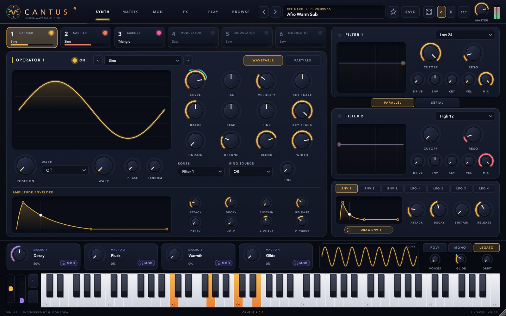
Afro Warm SubAudition in production
SIMLAF · Black Friday launch
The store opens on Black FridayPlanned opening ·
Save your cart. Checkout opens at launch.
SIMLAF 2 · Digital Analog DAW
Retrospective capture holds the last few minutes of every eligible input, so the take you played before you armed anything is still there. Every channel already has the console EQ, the dynamics and the circuit colour on it.
In development · Planned for December 2026 · Engineered by H. Domboka
A studio in the making
Play, recover, develop, reshape and mix. Explore the workstation below; full musical demonstrations are in production.
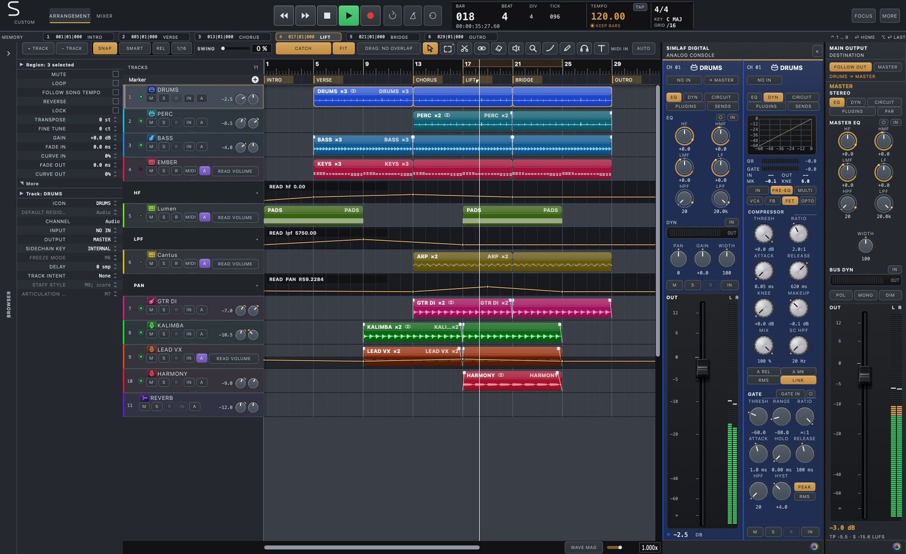
Studio interface preview · Full session film in production.
Where does your music begin?
Recover the performance, develop accompaniment and edit the notes around the song.
Explore this workflow ↗Beat productionDesign drum sounds, shape Density and split the kit into individual mix decisions.
Explore this workflow ↗RecordingCapture audio and MIDI, work with takes and comping, then refine timing and pitch.
Explore this workflow ↗MixingWork the console, route buses and parallel paths, then print the mix and stems.
Explore this workflow ↗Play first. Keep the moment.
Recover eligible audio and MIDI performances after the moment has passed. Build the take, comp the strongest phrases and move straight into the arrangement.
Retrospective audio and MIDI.
Takes, comping and overdub.
Arrangement, mix and print.
See the workflow
Play without recording. Recover the MIDI performance.
Studio interface preview. A full demonstration is in production.
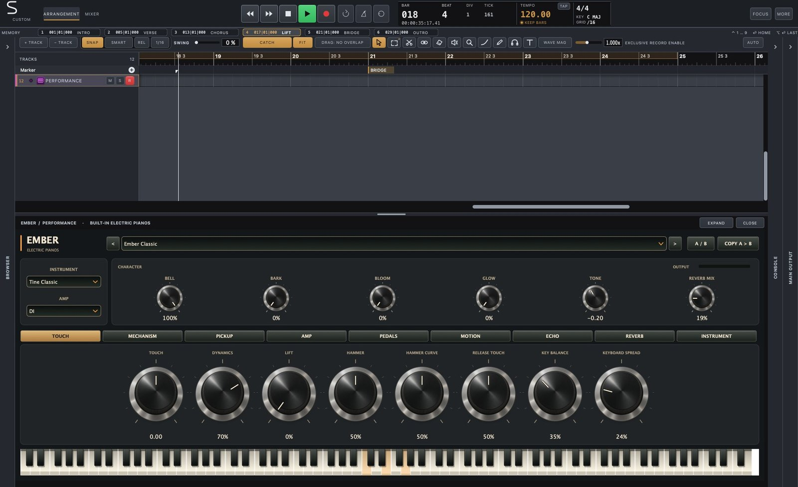
A console with character
Sweep analogue-matched EQ. Shape dynamics. Put compression before or after the curve. Then introduce circuit colour across the sub, body and air of the sound. EQ, dynamics and colour are on the strip before you open anything.
See the workflow
Sweep the console EQ. Shape dynamics in the channel.
Studio interface preview. A full demonstration is in production.
Hear the decisions
Listening sessions and console comparisons are in production. They will follow complete musical projects through the workstation.
NGOMA · drum synthesis and arrangement
Create the drum, write the pattern and place it in the song. Linked regions keep the kit connected; Make Unique gives one occurrence its own direction. Move from a shared instrument to individual mixer channels when the mix needs it.
Explode NGOMA into mixer children for individual processing while preserving the shared kit render.
See the workflow
Reshape the pattern with Density. Explode into mixer children.
Studio interface preview. A full demonstration is in production.
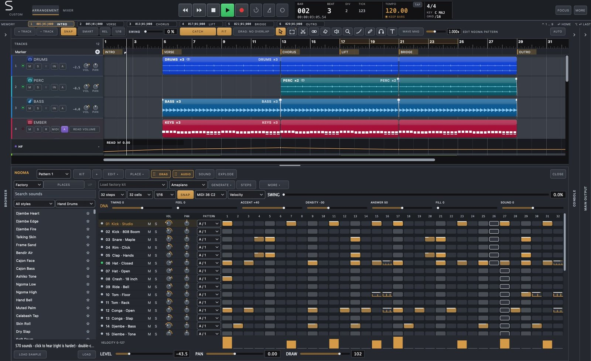
Session Player
Build chords, bass, melody, countermelody, strings and fills around the song. Guide the harmony, range, feel and intensity. Make a variation, split the parts across instruments, then rewrite any note yourself.

See the workflow
Give it a direction, edit the notes it writes, ask for another variation.
Studio interface preview. A full demonstration is in production.
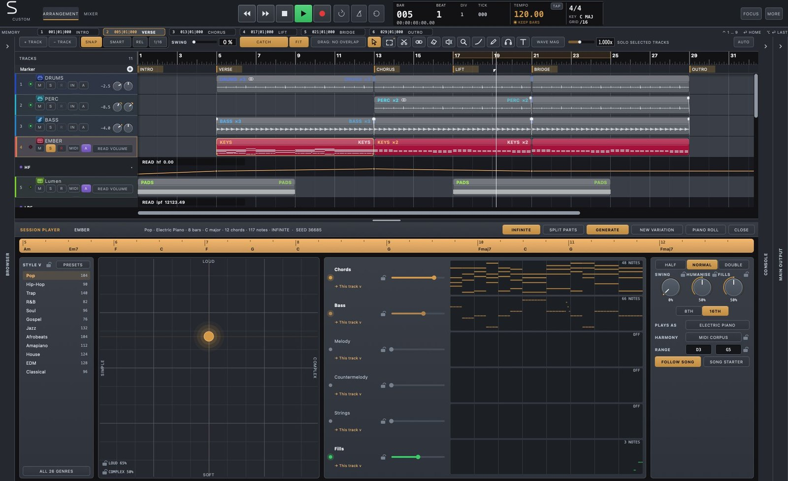
ELASTIC · native time and pitch
Move a note. Refine pitch centre, drift and vibrato. Shape formants, gain and timing inside the session. Stretch polyphonic material or work with transients while retaining the original performance for comparison.
See the workflow
Native note-level pitch editing. Move a note in the performance.
Studio interface preview. A full demonstration is in production.
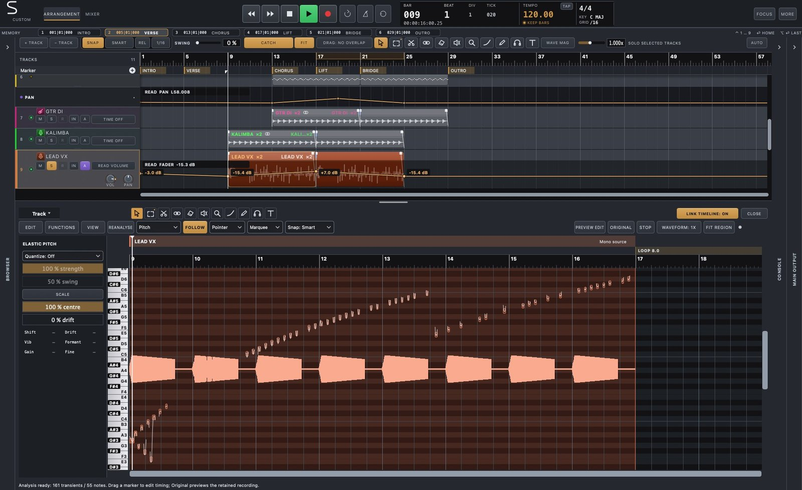
The mix, in full view
Build buses, sends, stacks and parallel paths. Work channel by channel or move a selected group together. Check the master, compare in mono and print the mix with monitoring controls kept outside the recording path.
See the workflow
EQ and dynamics on the channel, with its inserts, in views you can open side by side.
Studio interface preview. A full demonstration is in production.
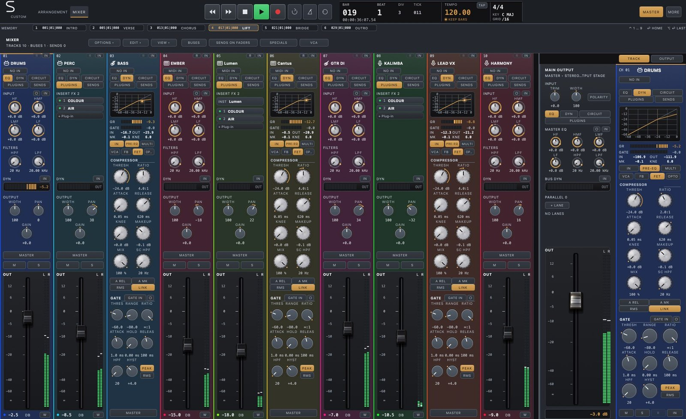
An instrument maker's imagination
Different engines. Different ways to play. Explore native instrument interfaces and explore the different ways they make sound.
Hybrid wavetable / FM
Move between wavetable colour and FM structures to build the source of the sound.

Additive / resynthesis
Shape a sound through its partials and explore a different approach to synthesis.
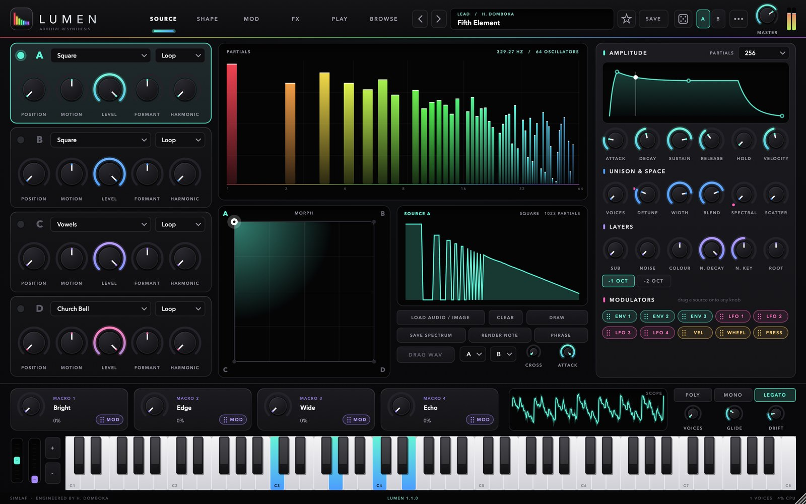
Electric piano
Write a part around the response and character of a dedicated electric-piano engine.
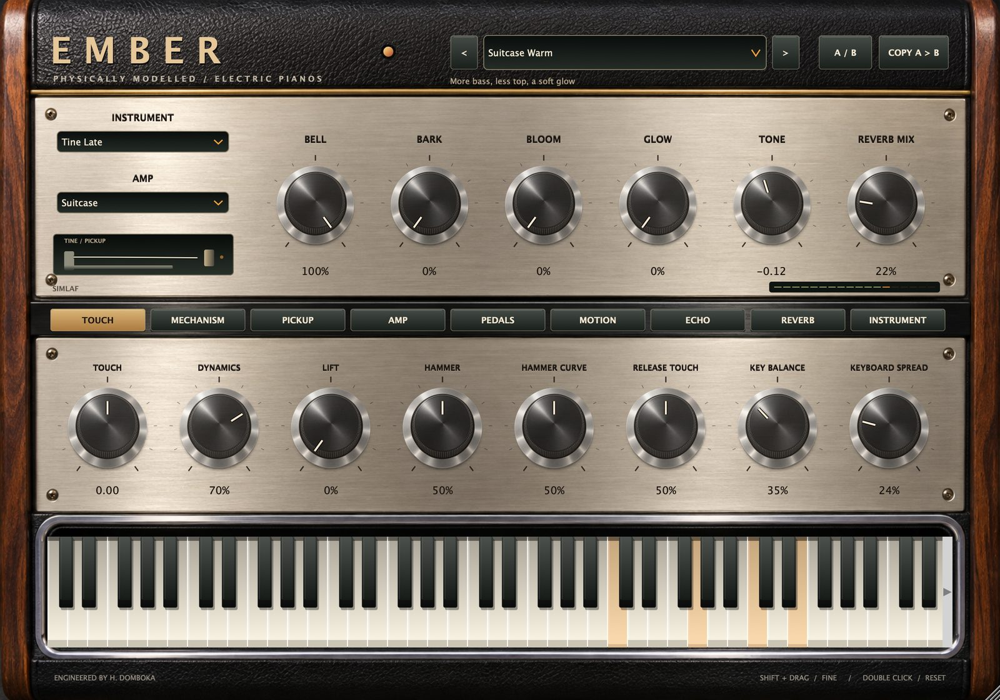
Layered hybrid instrument
Combine engines and explore the interaction between layers.
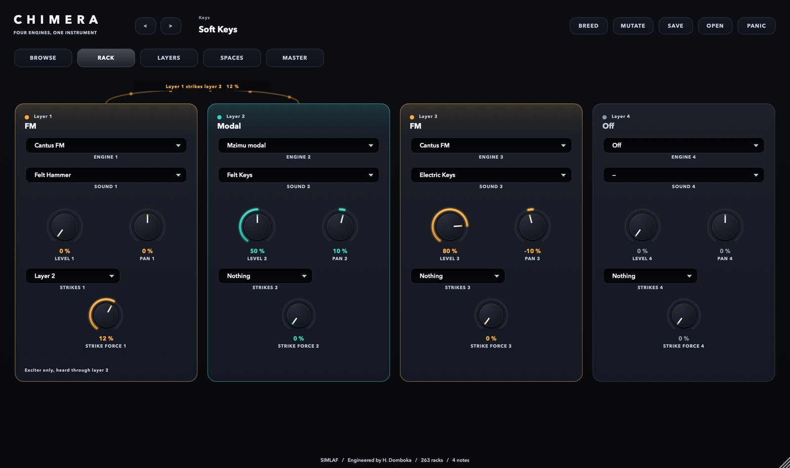
Physical modelling / MPE
Excite virtual structures and shape the response of the instrument.
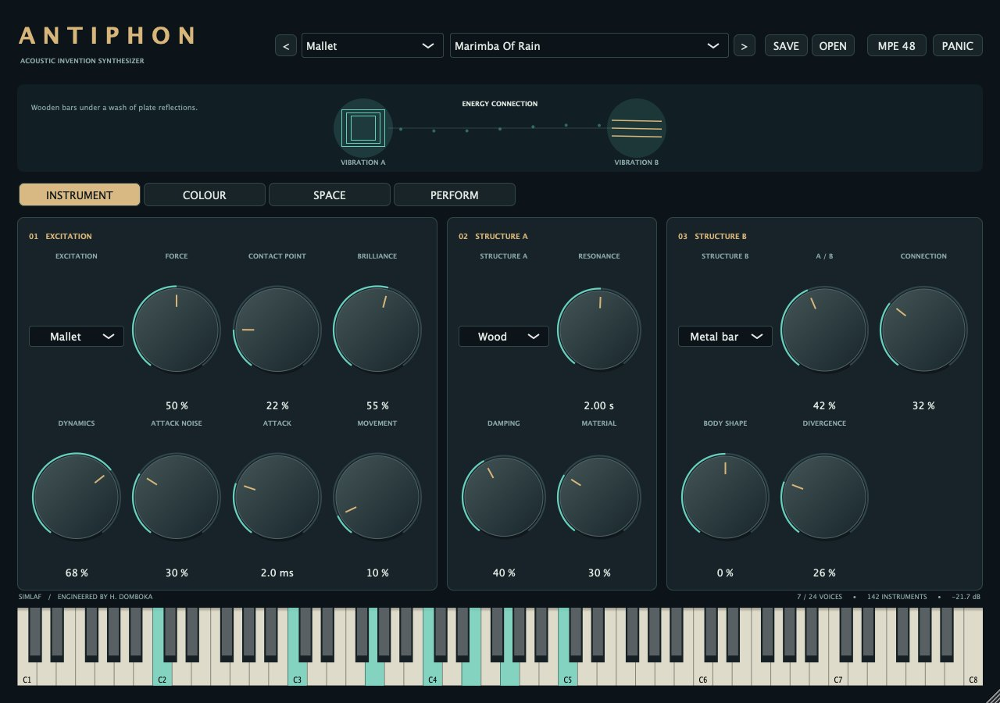
Native bass engine · controls detail
Shape sub, bass and log-drum voices with resonant-body, transient and playing-response controls.
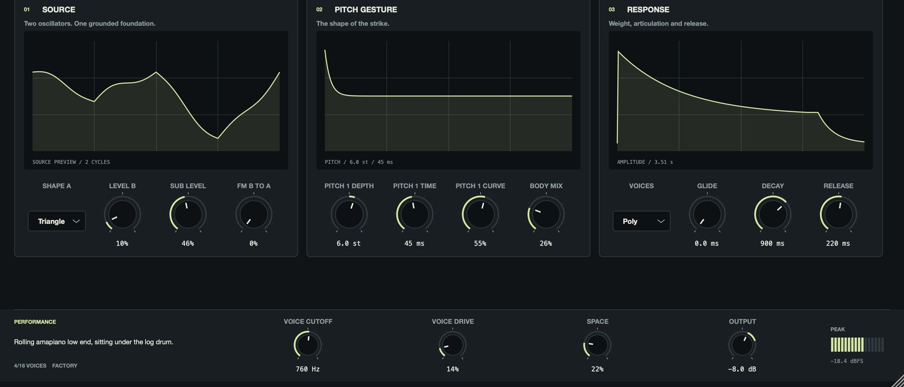
Sampling instrument
Turn recorded material into a playable voice alongside the native factory instruments.
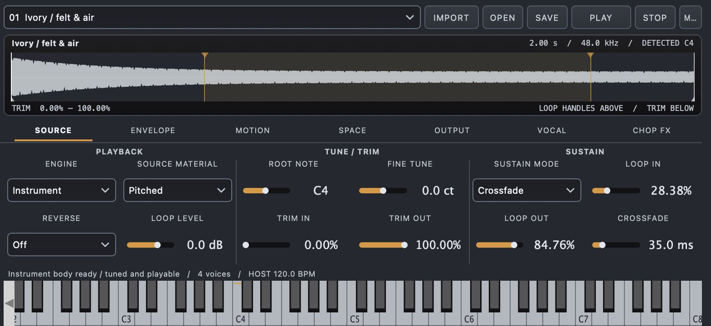
Physical drum synthesis
Build individual drum sounds, then develop the performance around the kit.
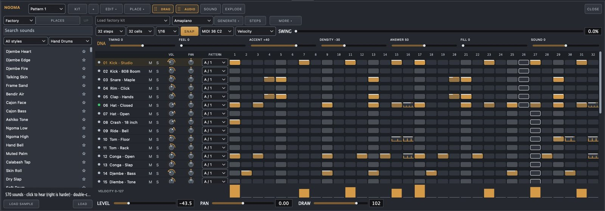
Interfaces from the DAW's embedded processors. Instrument interfaces retain their own visual identity. Standalone editions may have different versions and features.
Inside the audio engine
Eligible playback can be prepared ahead in larger blocks. Armed, monitored and other live work stays on its appropriate device path. The paths meet in the session's routing and output.
Eligible playback tracks → worker rendering → prepared audio.
Eligibility follows recording, monitoring, instruments, sidechains and active edits.Live inputs and performed instruments → device-side processing.
The selected device and its driver still define the audio callback.Tracks → sends and buses → master → print and monitoring.
Monitoring controls remain separate from the printed record.A smaller buffer gives the callback less time to finish. This illustration calculates that deadline; it does not predict round-trip latency.
A reproducible native print
Both native prints matched sample for sample in these fixtures.
This checks these native render fixtures. It is not a CPU-speed comparison or a certification of every processing mode. Read the measurement and recipe.
The interface is part of the instrument.
Daylight, Midnight and Studio. Change the atmosphere without restarting. Shape the workspace with interface sizing, track colour, strip widths and recalled panel arrangements.
An open canvas with clear contrast.

Charcoal and amber. The showcase opens here.

Inside the workstation
Recording, instruments, sound design, editing and finishing. Explore the working tools behind the creative possibilities.
No matching feature. Try another word or clear the search.
SIMLAF 2 is for macOS. Individual tools and processing modes have their own latency and system requirements. Previews demonstrate the development software, not a promise of final release availability.
Plan your studio
Current development builds contain Intel and Apple Silicon versions. Intel requires macOS 10.15 or later; Apple Silicon requires macOS 11 or later. Optional Split Stems requires macOS 13.4 or later.
Host Audio Units and VST3 instruments and effects alongside the native tools. Third-party plug-ins retain their own compatibility requirements.
Planned for December 2026. DAW pricing and public installer/trial availability will be published with the release. The DAW will have its own published licence and product offer.
Read the SIMLAF licence ↗Explore the feature guide, explore the workflows and instrument interfaces. Release news is available below.
Explore all feature groups ↗SIMLAF 2
Planned for December 2026. Explore the SIMLAF range while the studio takes shape.
Explore SIMLAFAutomatic sign-up is opening soon. You can request these updates by emailing us now.
Email for updatesOne email when SIMLAF 2 is released. See our privacy notice.